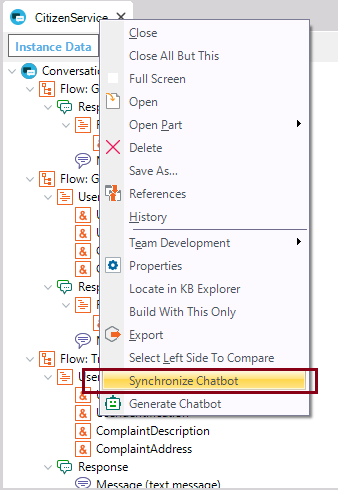

When you save the Conversational Flows object, the dialog is synchronized to the AI Provider. That is, a JSON object is created including the necessary changes, and it's sent to the Provider to update the conversational model. Addittionally, (when Merge Triggers property = TRUE), the data in the Provider (the training messages), are merged with the trigger messages of the instance, so the instance is kept up to date in relation to the Provider's information. Note that there is a Synchronize Chatbot menu option which allows forcing the synchronization although the instance hasn't got pending changes to save.  When you synchronize (as well as when you save the instance), the GXCF_Chatbots.config (it was called GXCF_<Conversational Flows instance name>Chatbot.config prior to GeneXus 16 upgrade 7) file is updated (which contains the necessary information to connect to the AI Provider). See alsoForce Chatbot Generation menu option |
| Backlinks | |
| Chatbot generator | |
| Chatbot Generator common errors and solutions | Force Chatbot Generation menu option |
| Synchronize Chatbot menu option |